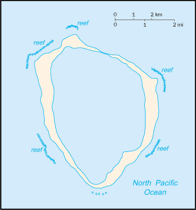
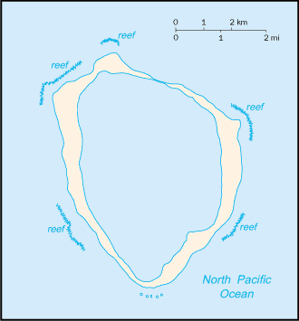

North America ::
Clipperton Island
-
Introduction :: Clipperton Island
-
Background:This isolated atoll was named for John CLIPPERTON, an English pirate who was rumored to have made it his hideout early in the 18th century. Annexed by France in 1855 and claimed by the US, it was seized by Mexico in 1897. Arbitration eventually awarded the island to France in 1931, which took possession in 1935.
-
Geography :: Clipperton Island
-
Location:Middle America, atoll in the North Pacific Ocean, 1,120 km southwest of MexicoGeographic coordinates:10 17 N, 109 13 WMap references:Political Map of the WorldArea:total: 6 sq kmland: 6 sq kmwater: 0 sq kmcountry comparison to the world: 248Area - comparative:about 12 times the size of The Mall in Washington, DCLand boundaries:0 kmCoastline:11.1 kmMaritime claims:territorial sea: 12 nmexclusive economic zone: 200 nmClimate:tropical; humid, average temperature 20-32 degrees Celsius, wet season (May to October)Terrain:coral atollElevation:0 m lowest point: Pacific Ocean29 highest point: Rocher ClippertonNatural resources:fishLand use:agricultural land: 0% (2011 est.)arable land: 0% (2011 est.) / permanent crops: 0% (2011 est.) / permanent pasture: 0% (2011 est.)forest: 0% (2011 est.)other: 100% (2011 est.)Natural hazards:subject to tropical storms and hurricanes from May to OctoberEnvironment - current issues:no natural resources, guano deposits depleted; the ring-shaped atoll encloses a stagnant fresh-water lagoonGeography - note:the atoll reef is approximately 12 km (7.5 mi) in circumference; an attempt to colonize the atoll in the early 20th century ended in disaster and was abandoned in 1917
-
People and Society :: Clipperton Island
-
Population:uninhabited
-
Government :: Clipperton Island
-
Country name:conventional long form: noneconventional short form: Clipperton Islandlocal long form: nonelocal short form: Ile Clippertonformer: sometimes referred to as Ile de la Passion or Atoll Clippertonetymology: named after an 18th-century English pirate who supposedly used the island as a baseDependency status:possession of France; administered directly by the Minister of Overseas FranceLegal system:the laws of France applyFlag description:the flag of France is used
-
Economy :: Clipperton Island
-
Economy - overview:Although 115 species of fish have been identified in the territorial waters of Clipperton Island, tuna fishing is the only economically viable species.
-
Transportation :: Clipperton Island
-
Ports and terminals:none; offshore anchorage only
-
Military and Security :: Clipperton Island
-
Military - note:defense is the responsibility of France
-
Transnational Issues :: Clipperton Island
-
Disputes - international:none